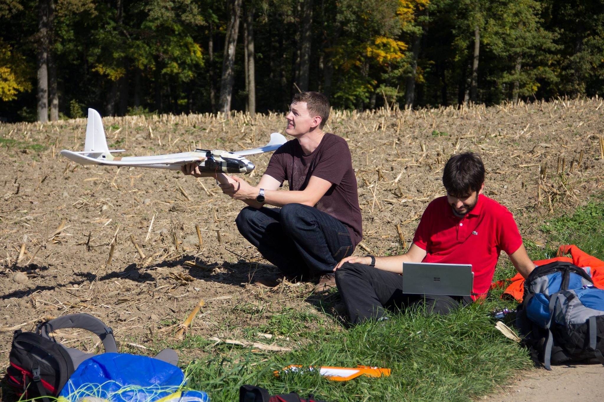
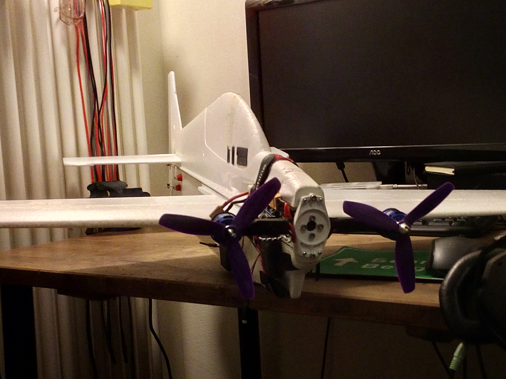
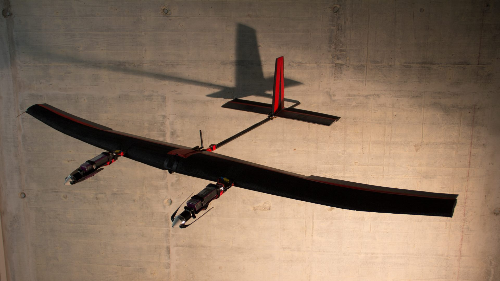
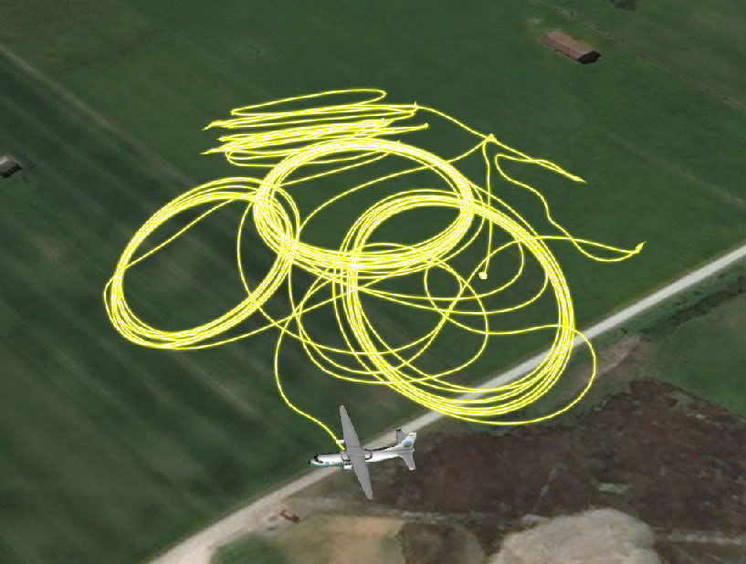

Prof. Mirko Meboldt's people are much better at explaining what the ETH Innovation Project is about, so please watch their video down below. For me this project was one of the absolute highlights of my bachelor at ETH Zürich. I participated with a group of friends, Jöri, Cla, Rick and Christoph. We had a good time and even managed to do pretty well, reaching the 1st place in construction ranking and 4th place in competition ranking (out of 90 teams).
Focus projects offer an opportunity to develop and build a product from A-Z during the 5th semester. I got taken into the ftero airborne wind energy project. Here is an article that explains what it was about, so I don't have to (thanks Manu). I was responsible for the hover and transition controller, the sponsoring/wiki databases, and helped out building the prototype airplanes for controls testing whenever I could.
   